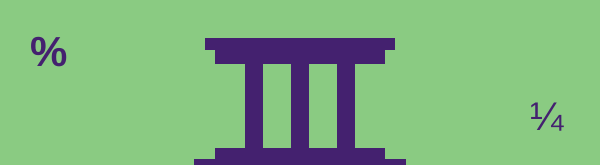
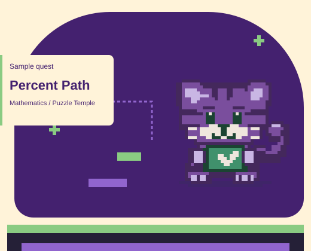

Mathematics
Playable sample
Puzzle Temple
Take the Percent Path: learn the idea, play two minigames, and use the feedback to find your next step.
Enter Puzzle TempleA proposed course-support platform
University coursework, reimagined as short learning quests with useful feedback and a route to screened peer support.
Two sample minigames. No account needed.

Choose your starting point
Start with our playable Mathematics sample. Programming is part of the proposal, with no activity built yet.

Take the Percent Path: learn the idea, play two minigames, and use the feedback to find your next step.
Enter Puzzle TempleA planned second course for a future learning adventure. There is no Programming lesson or activity in this prototype.
A world still to be built
The learning loop
Read the course material.
Try a game or practice question.
Check the feedback.
Practise the weak topic or ask a peer tutor for help.
Return to the idea and give it another try.
The opportunity
Following an explanation in class and answering a question on your own are different things. We want to help students practise between classes and find someone to explain topics they are struggling with.
Study groups and WhatsApp chats can be useful, but our idea puts practice, feedback and peer support in one place.
“An opportunity is a favorable set of circumstances that creates a need for a new product, service, or business.”
(Barringer & Ireland, 2019, Ch. 2, p. 72)
The venture behind the adventure
We would start with selected courses at a willing educational institution, using team time and agreed personal contributions to build the prototype. Student and tutor feedback would guide further development.
This is a partner-information preview. No enquiry has been submitted.
Our evidence combines the group survey, Barringer and Ireland, and research on gamification, adaptive learning and peer tutoring. Full references, artwork credits and aggregate survey results.